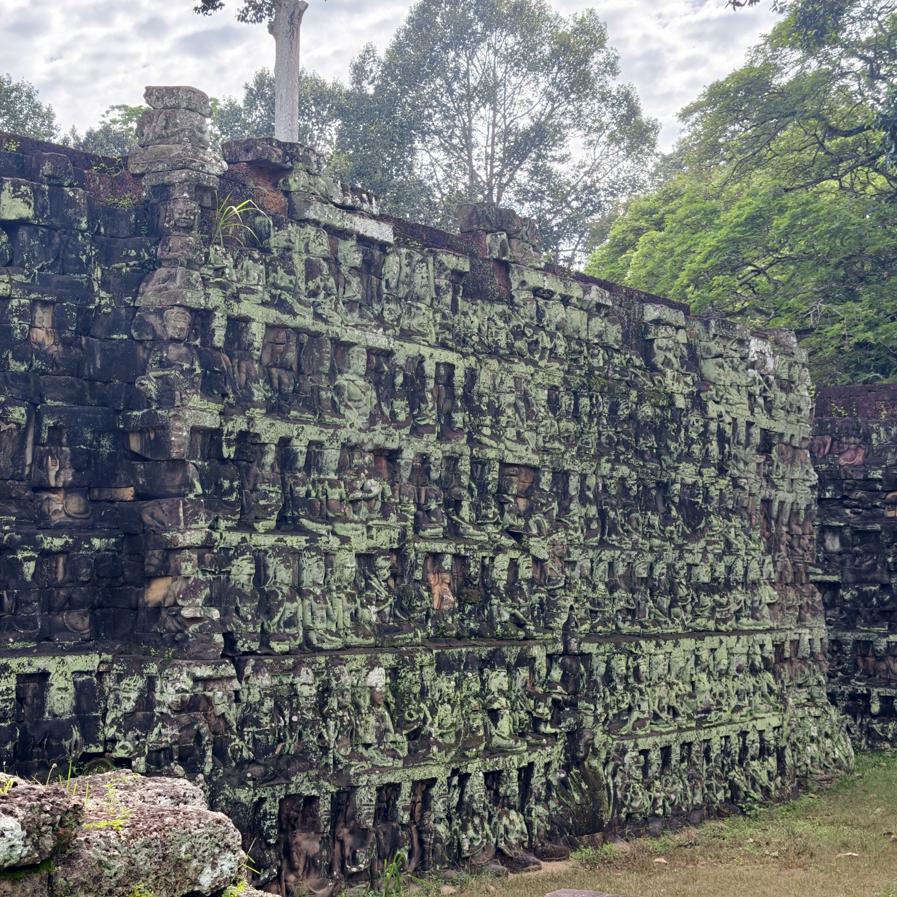
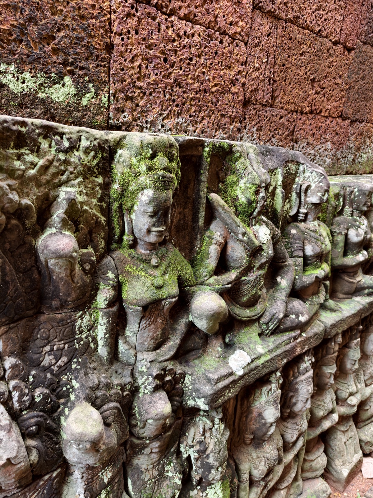
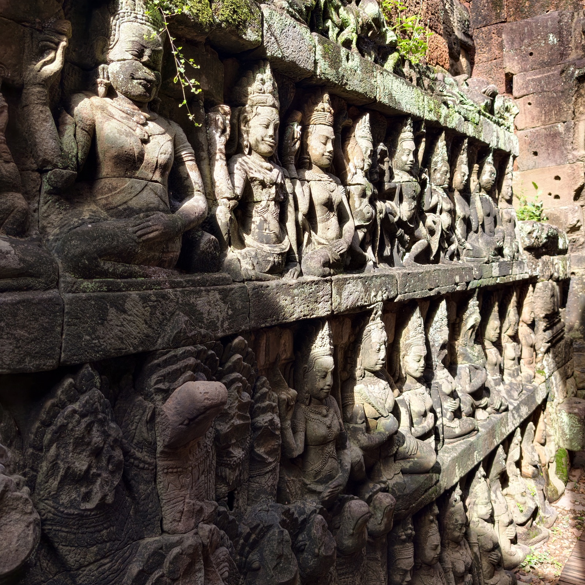
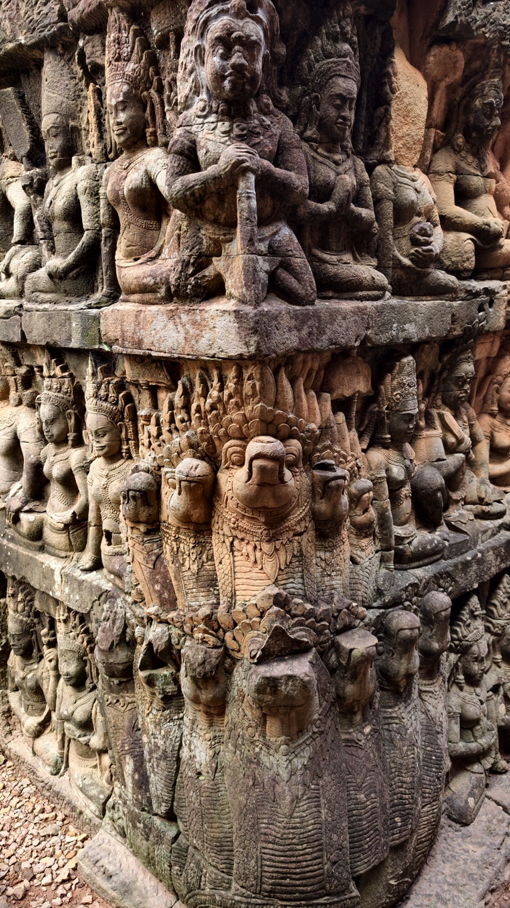
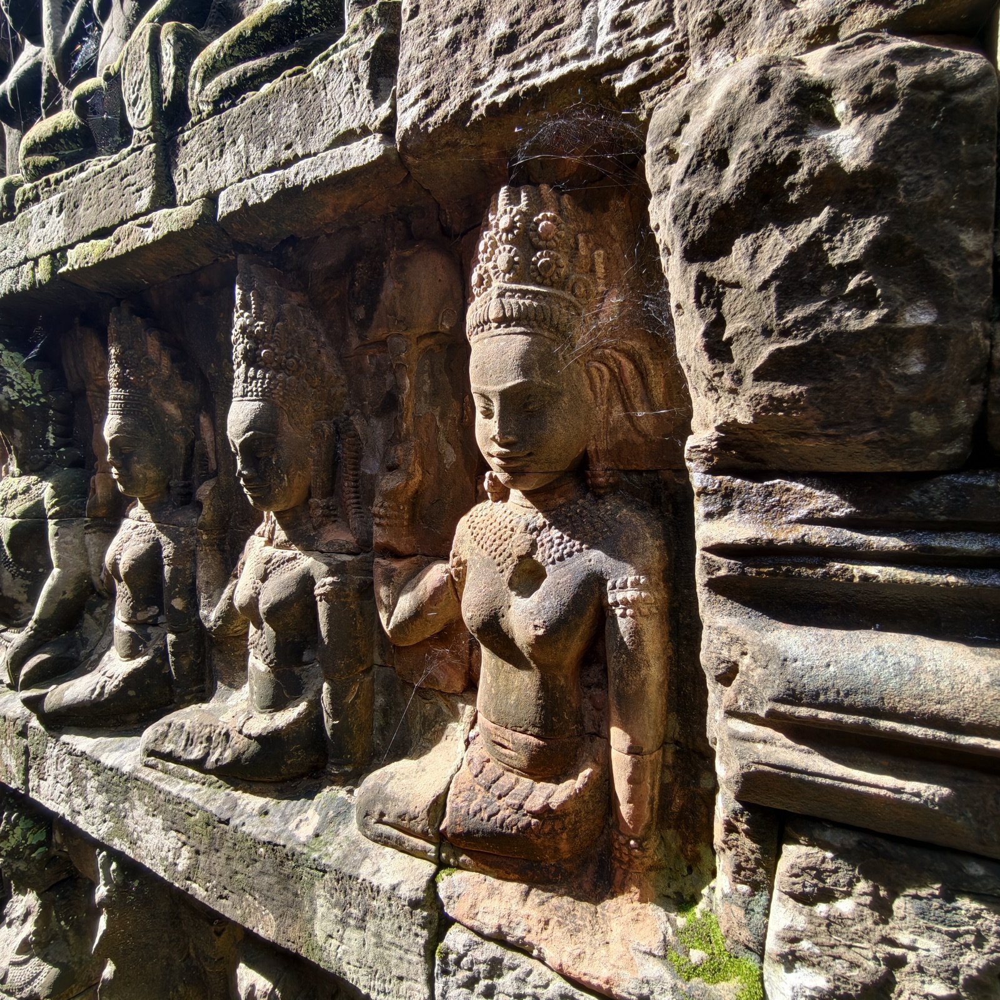
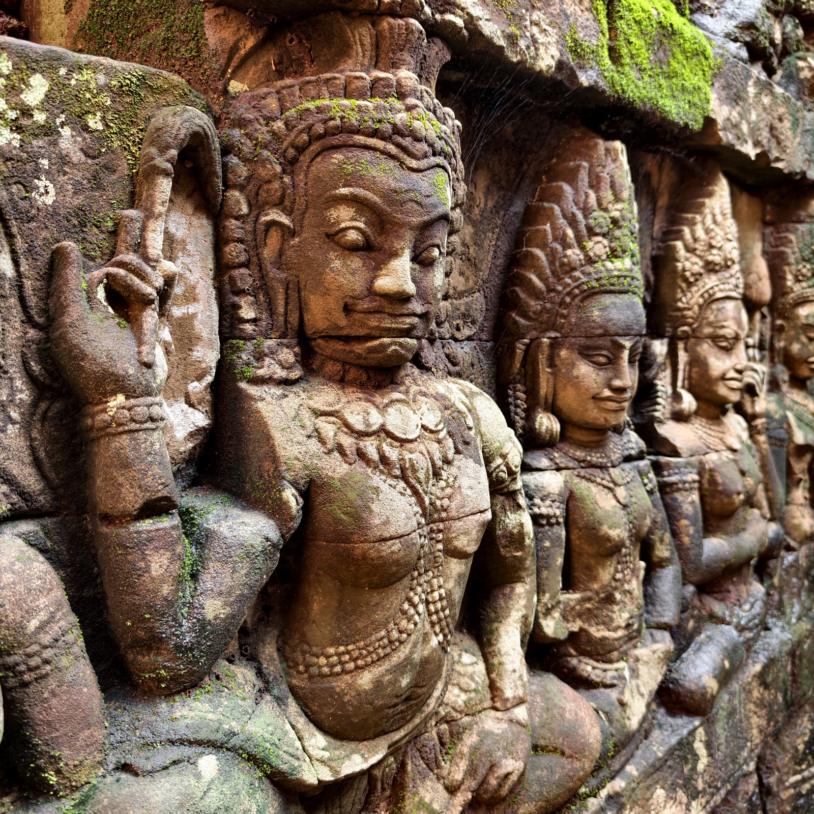

癫王台
癫王台在斗象台北侧，与斗象台同为十二世纪末阇耶跋摩七世所建。台名来自台顶的一尊石像：传说那是一位患了麻风病的国王，也有学者认为那其实是死神阎魔——若果真如此，这座高台当年可能是皇家的火葬场。
最值得看的是墙：六米高的台壁从下到上刻满神怪与仙女；而修复时人们发现，外墙之内还藏着一层更早的夹墙——夹墙的甬道里同样满刻浮雕，因为一直藏在墙内，躲过了几百年的风雨，保存得比外面那层好得多。





